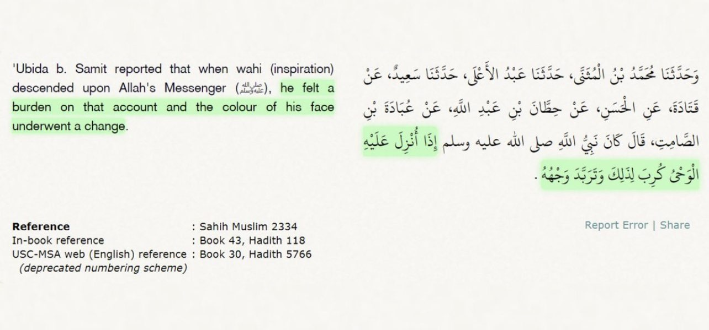
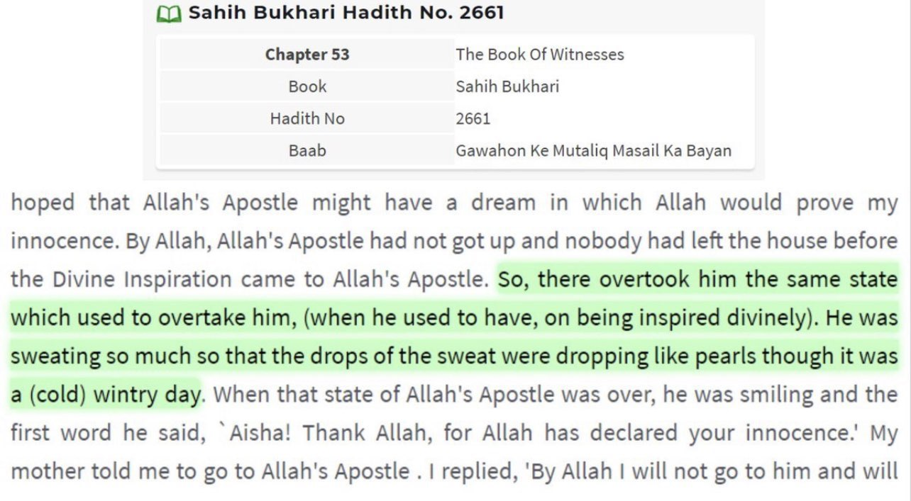
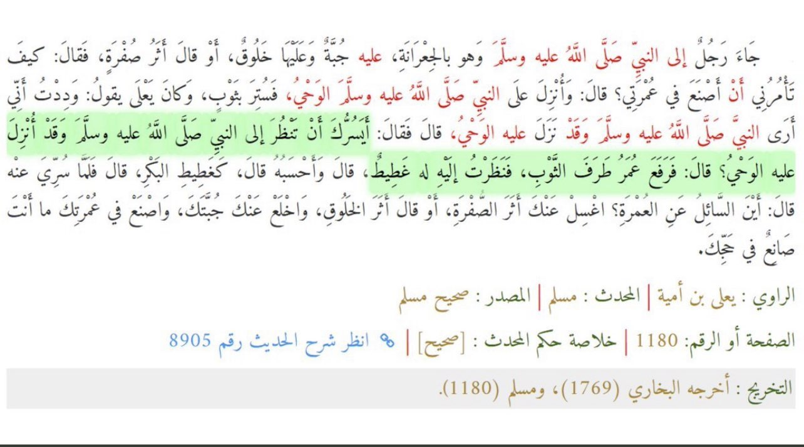
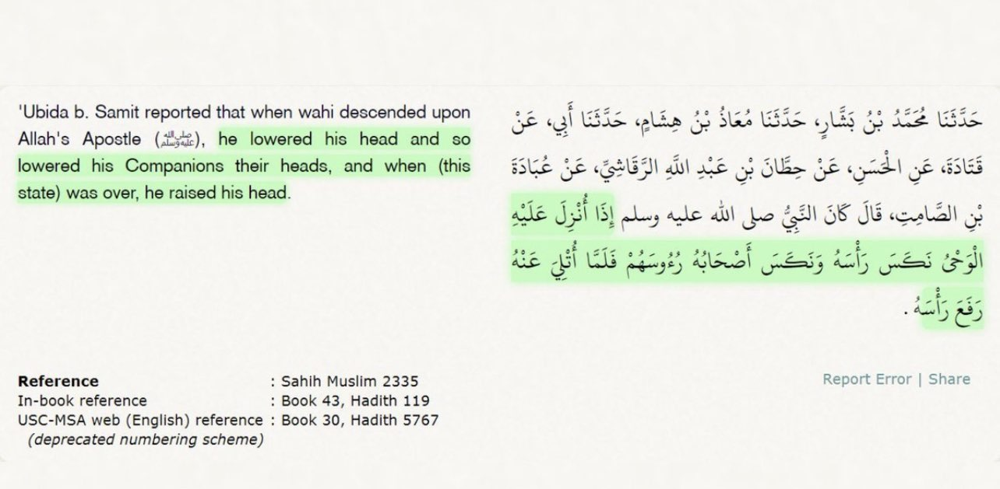
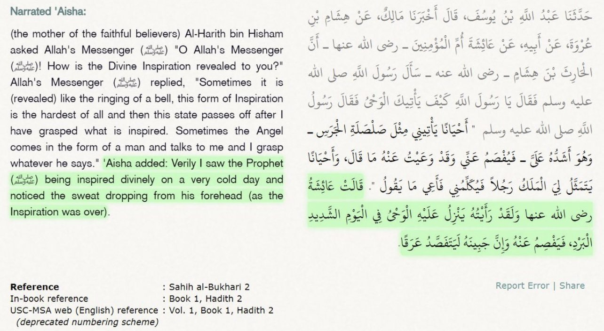
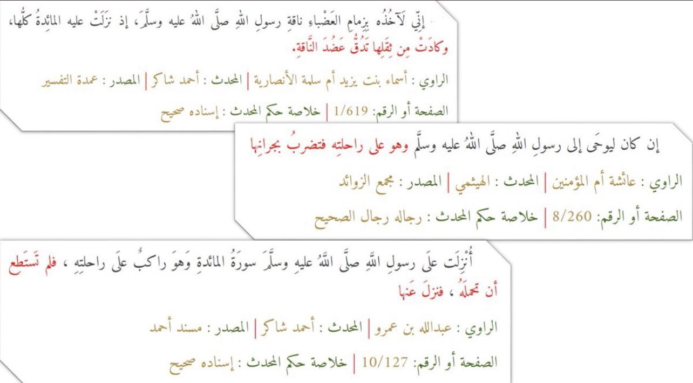
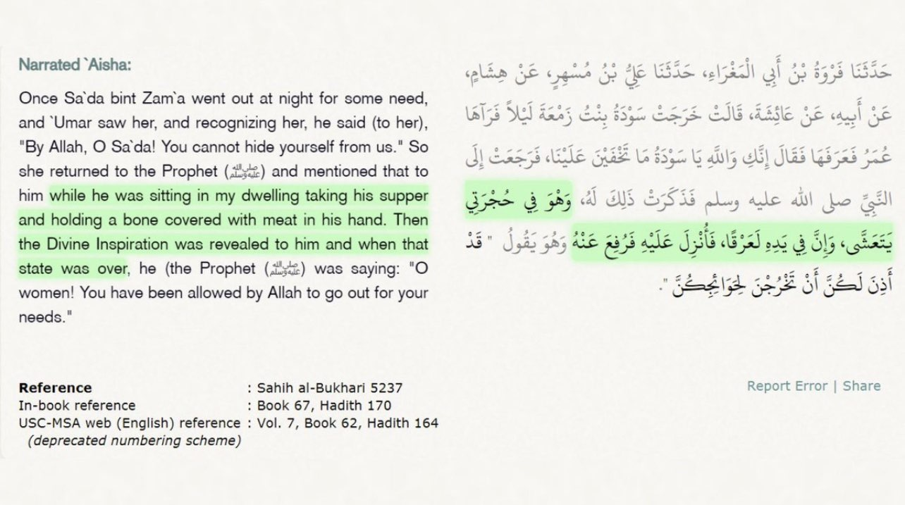
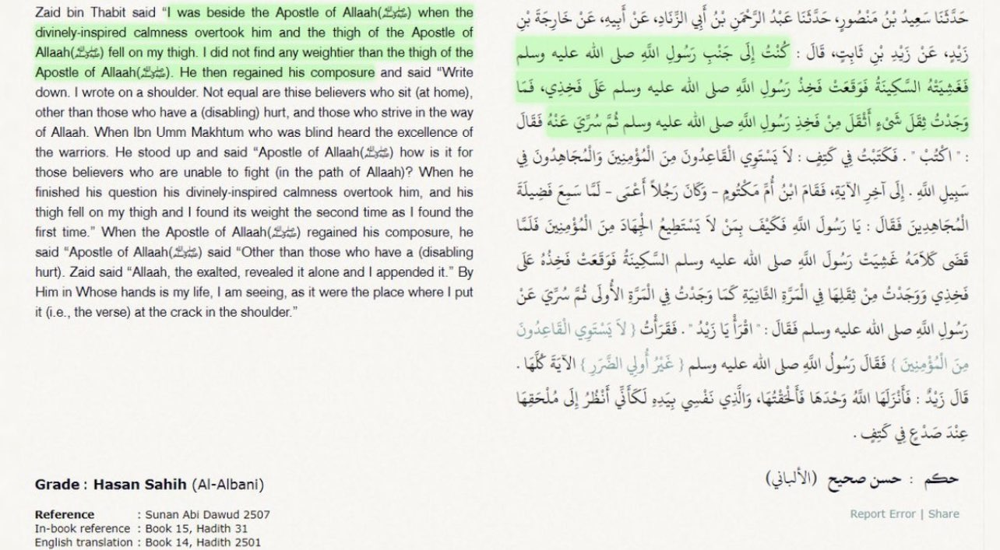
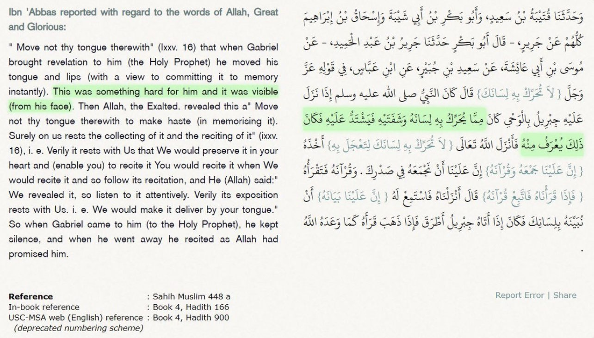

Refuting the Argument of
“Your Prophet ﷺ Was All Alone in the Cave and Nobody Saw Anything” by Showing how the companions witnessed the descent of the revelation on the Prophet ﷺ
First let’s deal with the contention of their being no witnesses in the cave when the Prophet ﷺ got revelation.
The entire argument itself is a non-sequiter. Just because nobody saw the first initial revelation the Prophet ﷺ experienced while in the cave, that doesn’t mean that he never got any revelation at all in that incident. Isn’t it possible for something to happen, but no witnesses happen to be around. For the Christians and Jews who may use this argument, let me ask one simple question:
Who are the witnesses that saw Moses at the burning bush when he was talking to God? According to the Bible he was all alone. Does that mean Moses never actually talked to God in the burning bush because no witnesses saw it?
Now the argument itself would have weight if the incident in the cave was the only time that the Prophet ﷺ received revelation, and it never happened again. However the revelation continued on for more than 2 decades, and there are plenty of incidents where people saw the Prophet ﷺ receiving revelation. Here are just some of those examples:
1.)
Ubada Bin Al Samet (Sahabi) was present when revelation used to come to the Prophet ﷺ. He even knew how it would change the Prophet ﷺ physically.

2.)
This is part of a long Hadith by Aisha (RA) where she talks about her accusation (Audobillah).
She then describes the moment where the Prophet ﷺ received revelation (after 1 month) that she's innocent. The symptoms were familiar to her "...the same state..."

3.)
In this Hadith in Sahih Muslim, a Muslim asked the Prophet peace be upon him a question about Umrah. While the Prophet ﷺ was receiving the answer via revelation, Umar (RA) asks the inquirer if he wants to see the Prophet in that state. As Umar lifts the cover, the Prophet ﷺ was breathing heavily. He was in public & the Sahaba recognized "that state" & even invited others to witness.

4.)
Ubada Bin Al Samet, in his Hadith, telling us how the Sahaba used to react when the Prophet ﷺ receives revelation when he was SITTING AMONG THEM.
Out of respect, the entire group would lower their heads & lift it up when the Prophet ﷺ does

5.)
In this Hadith, the closest person to the Prophet ﷺ, Aisha (RA), tells us how heavy the revelation was on him. Indeed, it's corroborated by "˹For˺ We will soon send upon you a weighty revelation." - Quran 73:5

6.)
In these 3 Hadiths, several Sahaba narrating the same incident where the camel of the Prophet ﷺ suddenly sat down & couldn't carry him as Surah Ma'ida was being revealed to him while he was riding it.

7.)
In this Hadith, Aisha (RA) tells us that she saw the Prophet ﷺ eating in her room then suddenly divine revelation came to him.
She says she recognized when the revelation was over as the Prophet ﷺ exited the usual state she's aware of.

8.)
Zaid Ibn Thabet (Sahabi) in this Hadith tells us an incident where he was sitting with the Prophet ﷺ and what happened while Jibreel came to him with revelation.

In all these Hadiths, the Prophet ﷺ wasn't jittering, but people around him recognized how heavy the divine inspiration was on him.
For example, when he (peace be upon him) was eating and Aisha (RA) saw him, he never dropped the food from his hand.
9.)
There're multiple other Hadiths where the Sahaba witnessed and saw Jibreel coming to the Prophet peace be upon him as a man teaching the Prophet ﷺ.
Check this Hadith out:
https://sunnah.com/muslim:8a
10.)
In this Hadith, Ibn Abbas (Sahabi, RA) tells us how the descent of revelation upon the Prophet ﷺ was visible and known.

The Witnesses that saw Angel Jibril A.S
https://m.youtube.com/watch?v=ska_5V2Fn9w